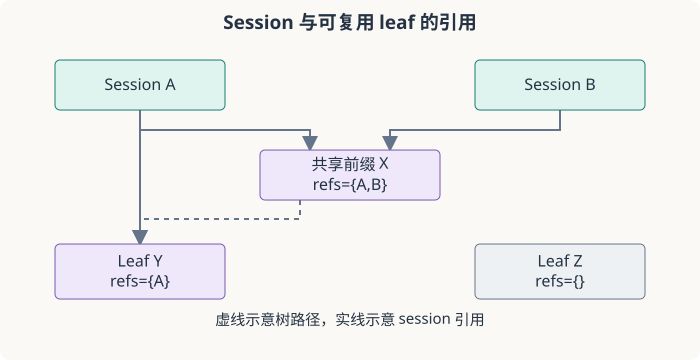
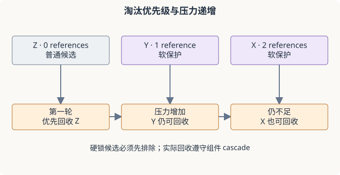

第 38 章 · SGLang 长上下文系统
Session-Aware Radix Cache：多轮会话的软保护与淘汰
如何保护活跃 Agent 的缓存，同时不把整个 KV 池锁死？
如何保护活跃 Agent 的缓存，同时不把整个 KV 池锁死？ 本章从具体反例出发，再追踪运行时数据结构与正确性条件。
1. 为什么通用 LRU 不够理解 Agent 会话
Agent A 完成一步工具调用，等待外部 I/O；Agent B 继续生成大量 tokens。A 虽然暂时闲置，却很可能马上复用长 prefix。纯 recency 无法区分一次性流量与长生命周期 session。Session-aware cache 把这种语义作为 eviction preference，不保证永久保留。
2. Session ID 是引用标签，不是会话存储
每个请求仍需提供完整 intended prompt。应用为同一逻辑 session 传顶层 session_id；完成时注册可复用 leaves。reference-only 流程无需 /open_session；结束时调用 /close_session，包括错误和取消路径。关闭只取消保护引用，不是立即释放全部 KV，也不表示数据安全擦除。

3. Full、SWA、Mamba 的引用范围
Full component 保护可复用 leaf 至 root 路径；SWA 保护窗口和页对齐 allowance 所需 tail；Mamba 保护 leaf 对应的 recurrent state。三个 component 独立追踪引用，不能用统一 token count 判断所有状态完整性。Full 内部节点被淘汰可级联清除 SWA/Mamba，SWA 可级联 Mamba；leaf 清除全部组件。
4. 软保护优先级的数学模型
设 eligible candidates 已排除硬锁等不可回收项。对 Full component，可用教学 lexicographic key 表示 (has_session_ref, ref_count, policy_score)，越小越先回收；SWA/Mamba 仅按 unreferenced→referenced 两轮 LRU，不套用 Full 的 ref_count 排序。若无引用候选不足，活跃会话节点仍然能被回收。
5. 例子：关闭会话后不立即删除
共享 prefix X 有 A、B 两个引用；独有 leaf Y 有 A 一个引用；一次性 leaf Z 无引用。假设三者均可淘汰且不考虑树结构约束，先淘汰 Z；更大压力才考虑 Y、X。A close 后，Y 变普通候选，X 还保留 B 引用。引用不是 pin，也不能越过 radix tree 的安全回收规则。

6. 并发安全：迟到的完成消息
UnifiedSessionRefTracker 保存 session generation；close 记录 tombstone、移除 generation、释放各 component 引用。若同名 ID 再打开，generation 改变；旧请求迟到时不应给新 session 增加引用。request lock 与 session 引用是不同生命周期；源码明确 finished leaf 与 request lock 所在节点可能不同。
7. 部署与评估边界
使用 --enable-session-radix-cache 且 UnifiedRadixCache 路径可用。缓存引用不是 Router session affinity（第16章）、多轮消息拼装、租户授权或 persistent memory。固定会话数量/turn 间隔、复用长度、缓存压力与并发，比较 hit rate、TTFT、eviction by component 与关闭路径。
8. 交互：机制状态与反例
Session Radix 教学实验
正常压力：Z 无引用，先回收 Z；活跃 A/B 尚未受影响。
高压力：Z 不足，Y 的一个引用弱于 X 的两个；Y 仍可淘汰。
关闭 A：Y 变无引用；X 仍由 B 引用。关闭不立即释放内容。
教学模型仅验证机制与反例，不代表真实 GPU benchmark。
9. CPU 最小实验
使用 Python 标准库验证上文核心不变量，下载 session_eviction.py。源文件包含正例、异常或边界断言。
python3 examples/session_eviction.py实验不运行真实 SGLang GPU serving、collectives、网络传输或模型训练。
10. 源码阅读路线与证据
固定上游快照 b1ef3a60797aa6c29bcfa4cc3bc135dd2f19ec22。论文贡献、运行时实现和教学推导分开标注。
- Enable the cache / Pass and close the session：Session-aware radix works only with UnifiedRadixCache; session_id labels cache references, not conversation reconstruction.
- Eviction behavior：Full attention eviction prioritizes unreferenced nodes then fewer session refs then configured policy; SWA and Mamba use two passes.
- Eviction behavior / cascade：Internal Full eviction cascades to SWA and Mamba; SWA eviction cascades to Mamba; leaf eviction removes all components.
- UnifiedSessionRefTracker.register_session_ref：Finished request leaf registration checks session generation and ignores stale or closed sessions.
- open_radix_session / release_radix_session：Session release removes references and tracks closed IDs; reopening creates a new generation.